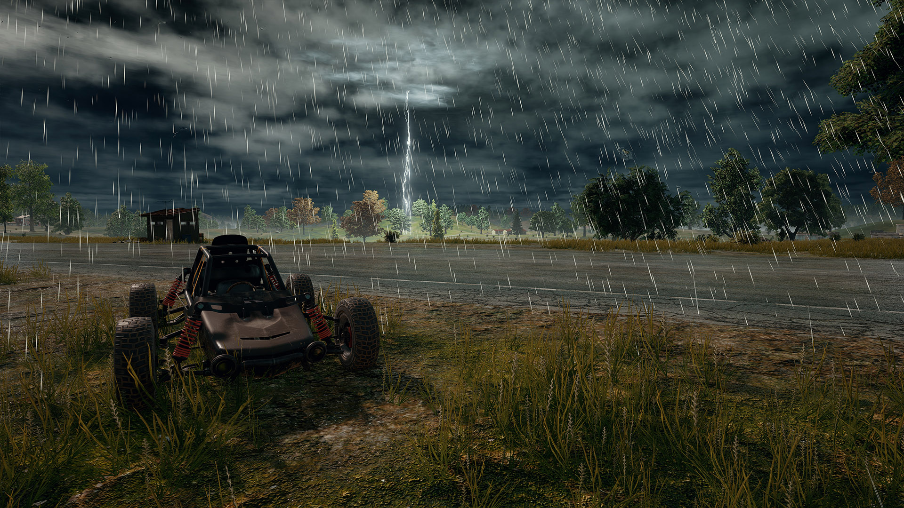

| Name |
Telephone |
Student number |
E-mail |
Role |
| Stian Lindberg |
95419168 |
218394 |
Stian_lindberg@live.no |
Web Developer |
We are a company that want to include PUBG players all around Europe into one big community.
This website will help both new players and old players with new facts or even just to learn the game.
PUBG is a game where you have to run away from a circle that will pop up on your map. If you are outside this circle
you will take damage, and the circle forces players closer and closer to eachother on a 8x8KM map.
The smaller the circle the more damage you will take staying outside this circle.
Survival of the fittest!